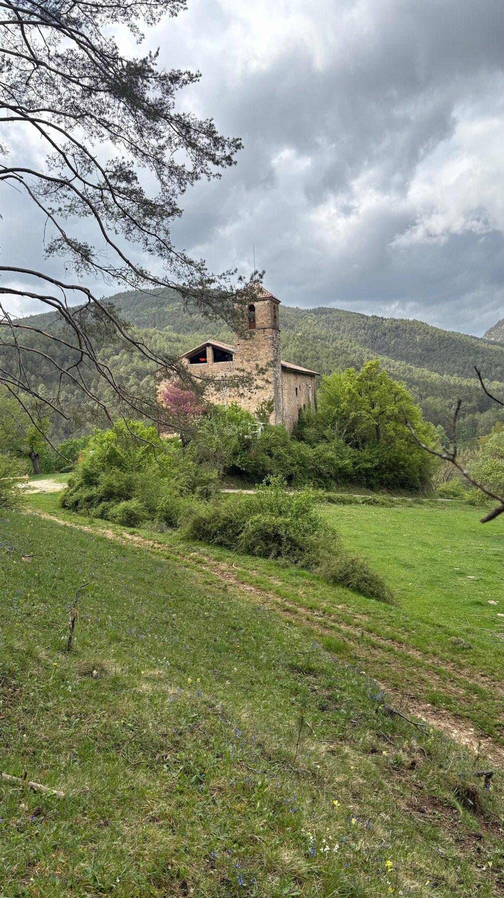

Detalls de l'estada
Màx. 5 h/dia · 5 dies a la setmana
Habitació a la masia
Inclosos i compartits
Català · castellà · anglès
D'1 a 4 setmanes
1–2 voluntaris/es
Quina ajuda necessitem
Disponibilitat
Obrim de març a octubre. A l'hivern, estades curtes sota consulta.
Fes el primer pas
Escriu-nos amb les teves dates i el que t'agradaria fer, i t'expliquem la resta.
Sol·licitar plaça